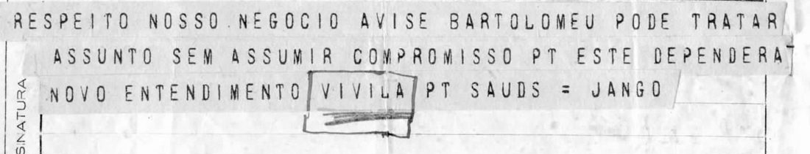
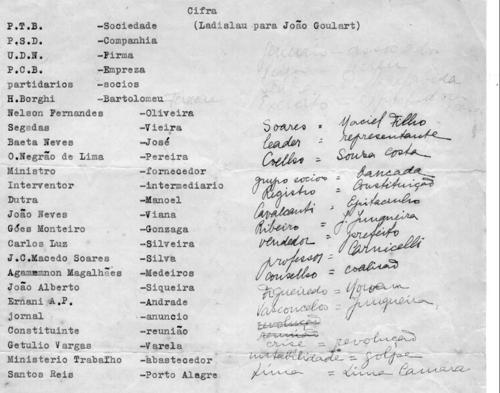

At a glanceKnown key applied · partial (94% of the cipher)
- The telegram
- A form of the Departamento dos Correios e Telégrafos, text on teleprinter strips, sent from São Borja “by telephone” to Ladislau Abreu, Av. Presidente Wilson 113, Rio, signed “JANGO” (João Goulart). The station stamp reads 1?.III.46 and a pencil note 11/3/46; the catalogue dates it 9 March 1946.
- Where
- CPDOC/FGV, Arquivo Getúlio Vargas, GV c 1946.03.09/2 (DocReader, collection CorrespGV3, page 521); ledger entry 1488, which gave the addressee as Getúlio Vargas.
- The cipher
- An open code (jargon), not a letter cipher: every word is plain Portuguese, and cover words stand for people, parties and offices.
- How it was read
- With the typed list “Cifra (Ladislau para João Goulart)” filed in the same fonds (GV c 1946/1950.00.00/5), which was not built from the telegram. One of the two words that stand out as code, BARTOLOMEU, is on it.
- What it says
- “Regarding our business: tell H. Borghi he can deal with the matter without making any commitment. This will depend on a new understanding …”
- Still open
- VIVILA, boxed in ink on the form as code and on no list; whether NEGOCIO is itself agreed jargon; the faint pencil on the list. Only one telegram in this code has been found, so the test of the key rests on a single name.
- Credit
- The transcription, the application of the list and the first reading are by WAINUT (GitHub LcCompany, pull request #461), with AI language-model agents viewing the images; no human reader has checked the text.
01 The telegram

The form has an address (“LADISLAU ABREU AVDA PRESIDt WILSON 113 9º ANDAR RIO DF”), a preamble (“R 255 DE SBORJA ( TELEFONICA ) RS 20/29-30-9º-21H”), three strips of text and a service line (“CT 113 9º”). The text has 20 words, which matches the first figure of the preamble; two of them are the telegraph word PT (full stop), so there are 18 words of sense. The form’s own legend lists, for the preamble, the kind of telegram, the station of origin, the number, the number of words and the date and hour of presentation. That would make 20 the words of text, 29 perhaps the chargeable words with the address, and 9º-21H perhaps “the 9th, 21h”, which would fit the catalogue date; this is a suggestion and was not checked, and the figure 30 is unexplained.
In hand, not transmitted: the ink box round VIVILA with a pencil scribble under it (not legible), a pencilled “Código” (?) up the left margin, a pencilled number and initials at top left, and at the foot “… 10 00 / 11/3/46”. Nothing on the form deciphers it.
02 The code list

The sheet is headed “Cifra (Ladislau para João Goulart)”, so it names the same two correspondents as the telegram, in the other direction. Its 25 typed pairs give cover words for parties (P.T.B. = Sociedade, P.S.D. = Companhia, U.D.N. = Firma, P.C.B. = Empreza), for groups (partidários = sócios) and for men (H. Borghi = Bartolomeu, Dutra = Manoel, Getúlio Vargas = Varela and others), and for a few things (Ministro = fornecedor, jornal = anúncio, Constituinte = reunião). To the right are 16 ink additions whose direction is not fixed (“leader = representante” against “crise = revolução”) and faint pencil at the top right; a pencil name after Bartolomeu reads “Ferreira”, “Ferraz” or “Teixeira” and was not used. Below the list are stock phrases for weekly telegrams from São Borja to Alzira signed Maneco, which do not occur in this telegram.
The list is dated only by its folder, 1946-1950, so it is not shown to be the key in use in March 1946.
By the contributor’s record the key was frozen from the 25 typed pairs before the telegram was decoded; nothing was built from the telegram. The second code list named in the catalogue, GV c 1950.02.00/1 (1950: first names for politicians, car makes), is another code and matches none of the 20 words.
03 The reading
Respeito nosso negócio, avise {BARTOLOMEU = H. Borghi} pode tratar assunto sem assumir compromisso. Este dependerá novo entendimento |VIVILA|. {SAUDS = Saudações}. Jango.
In English: regarding our business, tell H. Borghi he can deal with the matter without making any commitment; this will depend on a new understanding [VIVILA]; regards; Jango. The sentences are ordinary 1946 Portuguese telegraph style.
Count of the 18 words: 15 verbatim from the strips, 1 code word resolved with the filed list (BARTOLOMEU), 1 abbreviation written out (SAUDS), and 1 hole (VIVILA). That is 17 of 18, 94.4%, under the 95% a complete reading needs; NEGOCIO is counted as read, as the plain word, although it could itself be agreed jargon. Hugo Borghi was a leader of the Partido Trabalhista Brasileiro in São Paulo at the time, which fits the date and the sense (this background is not from the sources and was not checked here).
04 What remains uncertain
- VIVILA: boxed in ink by the recipient, so probably a code word; it is not on the typed list, not among the ink or pencil additions as read, not on the 1950 list, and a full-text (OCR) search of the collection finds no other use. The scribble under it inside the box is not legible.
- NEGOCIO: read as the plain word; it may be agreed jargon not on the list.
- The test of the key rests on one telegram: of its two code-looking words, one (BARTOLOMEU) is on the list, one is not. Searching the collection’s OCR for BARTOLOMEU gave ten hits (this telegram, the list, and eight personal names in newspapers and name lists) and for VARELA six (the list, and real surnames in the three other hits that were viewed); no second text in the code was found, and OCR misses are possible.
- The faint pencil on the list and the direction of the ink additions are open; no text in this code uses them.
- The addressee, Ladislau Abreu, is not identified further here.
- No human reader of Portuguese has checked the text. The project checker’s period word list lacks eight words of the telegram (negócio, avise, assunto, assumir, compromisso, dependerá, novo, saudações) and the name Jango, so it does not pass the Portuguese; the English translation passes.
- The scans were fetched from the DocReader here and the 20 words of text agreed with the transcription when the integration checked them against the image; other pages were not re-read.
- Prior art: the catalogue vetting of 3 November 2026 found nothing in DECODE, Tomokiyo or Lasry, and web searches on 3 and 12 November 2026 (including “Vivila” with Vargas, Jango, Goulart, 1946) found no edition or reading; the published Vargas letters of 1946–50 were not searched for VIVILA.
Full texts
The transcription and the decryption of every document on this page, so that the reading can be used and checked. Short files are shown here; all are in the repository.
Telegram, São Borja to Rio, March 1946, signed Jango read in part
On 'our business': Goulart asks Ladislau Abreu to tell H. Borghi (cover name Bartolomeu) that he may handle the matter without making any commitment, since this will depend on a new understanding; the last code word, VIVILA, is open.
Builds coherent sentences, but under the read bar of 95% of words read as sense; the holes are marked in the reading.
Transcription
# CPDOC/FGV, Arquivo Getúlio Vargas, GV c 1946.03.09/2 (DocReader bib CorrespGV3, pagfis 521) # Telegram, São Borja to Rio de Janeiro, signed JANGO (João Goulart), to Ladislau Abreu. # Reconciled from pass 1 and pass 2: the two passes agree sign for sign (0 disagreements in 20 text words, # 8 strips). Conventions: SIGN_CONVENTIONS.md. # # address A1 = LADISLAU ABREU AVDA A2 PESIDt WILSON 113 9º ANDAR A3 RIO DF = # preamble (kind R, from S. Borja by telephone, Rio Grande do Sul, then figures 20/29-30-9º-21H; 20 = the # number of words in the text, which counts 20 including both PT; the other figures are not interpreted here) P1 = R 255 DE SBORJA ( TELEFONICA ) RS 20/29-30-9º-21H # text L01 RESPEITO NOSSO NEGOCIO AVISE BARTOLOMEU PODE TRATAR L02 ASSUNTO SEM ASSUMIR COMPROMISSO PT ESTE DEPENDERA L03 NOVO ENTENDIMENTO VIVILA PT SAUDS = JANGO # service line S1 = CT 113 9º = # # hand (not transmitted): # - ink box drawn round VIVILA in L03, with a heavy pencil scribble under it inside the box (something written # and struck out, or a plain scribble; not legible); # - pencil 'Código' (?) written up the left margin at the foot of the text field; # - pencil at the upper left, a number and initials (not read); date stamp of the receiving station, '1?.III.46'; # - pencil at the foot, '... 10 00 / 11/3/46' (a time and date, 11 March 1946); # - archive shelfmark in pencil at top right, 'GV c 46.03.09/2'.
Decryption
# decryption of GV c 1946.03.09/2 with key_frozen.tsv (mechanical, scripts/decrypt.py)
# {CODE=meaning}: code word found in the key; |WORD|: boxed on the form, not in the key (unidentified)
L01 RESPEITO NOSSO NEGOCIO AVISE {BARTOLOMEU=H. Borghi} PODE TRATAR
L02 ASSUNTO SEM ASSUMIR COMPROMISSO . ESTE DEPENDERA
L03 NOVO ENTENDIMENTO |VIVILA| . SAUDS = JANGO
# code words found in the key: 1Reading
# Reading: GV c 1946.03.09/2, João Goulart (Jango) to Ladislau Abreu, São Borja to Rio, March 1946
Portuguese, telegraph style (articles and prepositions left out by the sender, as in the original). Accents are
restored; the teleprinter has none, so this is not counted as a change. Marks: `{CODE=meaning}` code word resolved
with the filed code list GV c 1946/1950.00.00/5; `|VIVILA|` code word boxed in ink on the form and not on the list
(unidentified, a hole); `{SAUDS/Saudações}` telegraph abbreviation written out. Nothing else departs from the
mechanical decryption (`decryption_goulart1946.txt`); `scripts/check_marks.py` checks this.
## Text
L01 Respeito nosso negócio, avise {BARTOLOMEU=H. Borghi} pode tratar
L02 assunto sem assumir compromisso. Este dependerá
L03 novo entendimento |VIVILA|. {SAUDS/Saudações}. Jango.
## Words
18 words (PT counted as punctuation, not as words): 15 read verbatim from the strips, 1 code word resolved with the
filed list (BARTOLOMEU = H. Borghi), 1 abbreviation written out (SAUDS), 1 hole (VIVILA, unidentified code word).
Sense from the signs: 17 of 18 words (94.4%).
`NEGOCIO` ('our business') is not on the code list and is read as the plain word; it may itself be a cover word
for something the two men had agreed, which the sheet does not show.Translation
# Translation: GV c 1946.03.09/2, João Goulart (Jango) to Ladislau Abreu, March 1946
English, with the same marks and the same hole as `reading_goulart1946.md`. Words in round brackets are supplied
for English grammar only; the telegram leaves them out.
## Text
Regarding our business: tell {BARTOLOMEU=H. Borghi} (that he) can deal with (the) matter without making any
commitment. This will depend on (a) new understanding |VIVILA|. {SAUDS/Regards}. Jango.
## Notes
- BARTOLOMEU is the cover name for H. Borghi (Hugo Borghi, then a leader of the PTB in São Paulo) on the code list
'Cifra (Ladislau para João Goulart)', GV c 1946/1950.00.00/5.
- VIVILA is boxed in ink on the form, so the recipient took it as a code word. It is not on the typed list, not among
the ink and pencil additions as read, and not on the 1950 list GV c 1950.02.00/1. Its meaning is open. It may name
the party to the 'new understanding' or the person on whom it depends; that is a guess and is not put into the text.05 Sources
- CPDOC/FGV, Arquivo Getúlio Vargas, GV c 1946.03.09/2: DocReader, CorrespGV3 (page 521).
- The code list GV c 1946/1950.00.00/5: DocReader (page 1852); and GV c 1950.02.00/1 (pages 4665–4667), tried and ruled out.
- WAINUT (LcCompany), pull request #461 (transcriptions, key, scripts, reading and notes).
The transcriptions, key, scripts, reading and notes are in targets/goulart1946.
Cite this page
WAINUT, “A coded telegram from João Goulart to Ladislau Abreu, March 1946”, Cyphersolver, posted 12 November 2026, https://cyphersolver.com/goulart1946.html.